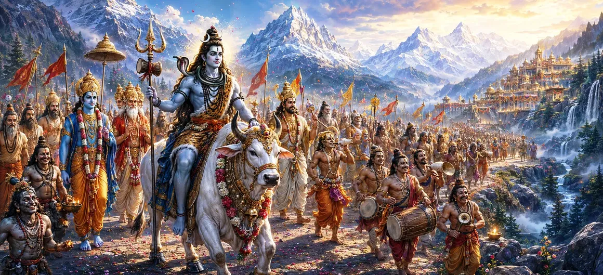

When the auspicious hour for the divine marriage arrived, Lord Shiva prepared to leave Kailāsa and journey to the abode of King Himālaya. Accompanied by an extraordinary assembly of gods, sages, gaṇas, yakṣas, and celestial beings, Mahadev's wedding procession became one of the most remarkable spectacles ever witnessed in the three worlds.
The sacred mountain of Kailāsa resounded with joy as preparations for departure were completed. Shiva mounted Nandi, his faithful bull, while divine attendants assembled around him in celebration.
Countless gaṇas joined the procession. Though many appeared unusual and fearsome in form, they were devoted servants of Shiva and celebrated the occasion with great enthusiasm.
The devas arrived in their celestial vehicles to accompany the Lord. Brahmā, Viṣṇu, Indra, and many other divine beings joined the wedding procession to honor the sacred marriage.
Divine drums, conches, and celestial instruments filled the heavens with auspicious sounds. Gandharvas sang sacred hymns while apsarās danced in celebration of the divine event.
The procession displayed both the majestic and ascetic aspects of Shiva. Celestial splendor existed alongside wandering ascetics, divine beings, spirits, and attendants of every form.
As the magnificent procession advanced toward the kingdom of Himālaya, all beings who witnessed it were filled with awe. The entire path seemed blessed by the presence of Lord Shiva.
All beings, regardless of appearance, can become devoted servants of the Divine.
The wedding procession united gods, sages, and countless beings in one sacred purpose.
Shiva embraces both simplicity and magnificence, transcending all worldly distinctions.
People along the route gathered to witness the extraordinary procession. Some marveled at the divine splendor, while others were astonished by the unusual appearance of Shiva's attendants. Yet all recognized that they were witnessing a moment of cosmic importance.
The wedding procession teaches that the Divine accepts every sincere soul. Shiva's companions came from many different backgrounds and appearances, yet all were united through devotion. True spirituality values inner purity over outward form.
The route toward Himālaya seemed transformed into a celestial pathway. Flowers showered from the heavens, sacred chants echoed through the air, and every step of the procession increased the excitement surrounding the divine marriage.
At the palace of Himālaya, Queen Menā eagerly awaited the arrival of the bridegroom. However, the appearance of Shiva's remarkable procession would soon leave her astonished and uncertain, setting the stage for the next chapter.
"Where devotion leads, every path becomes sacred and every companion becomes blessed."
Lord Shiva's extraordinary wedding procession has now reached the kingdom of Himālaya. While the gods rejoice and the heavens celebrate, Queen Menā is about to witness the unusual and awe-inspiring appearance of Shiva's attendants. Continue to the next chapter to discover Menā's reaction to the terrible procession and the lessons that follow.